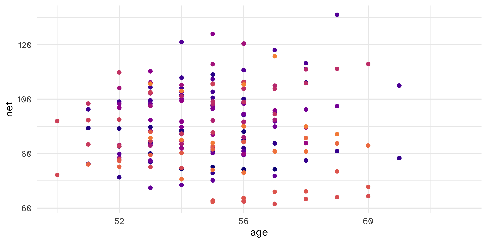
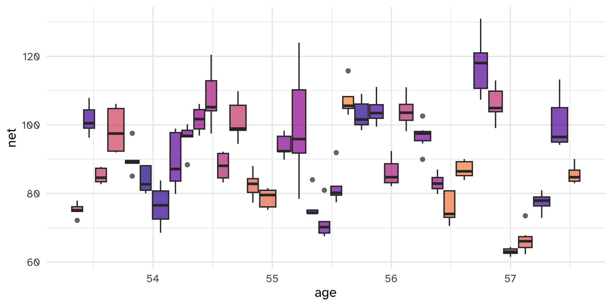
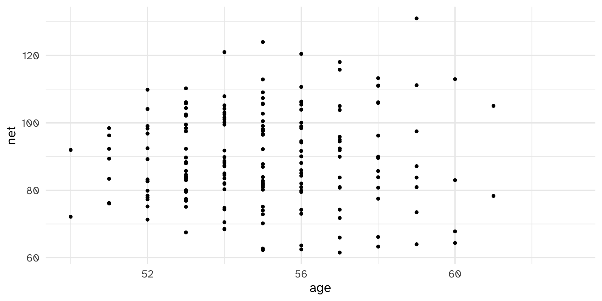
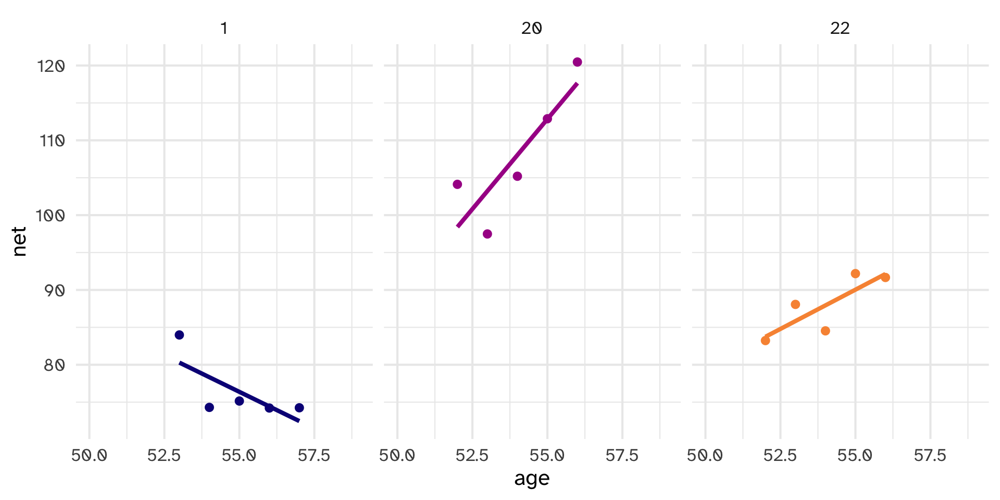
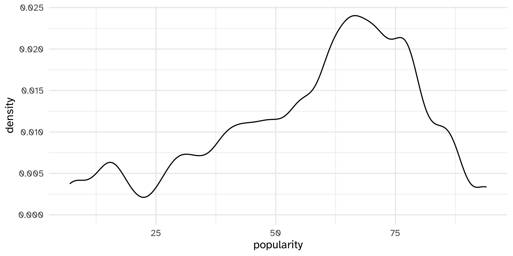
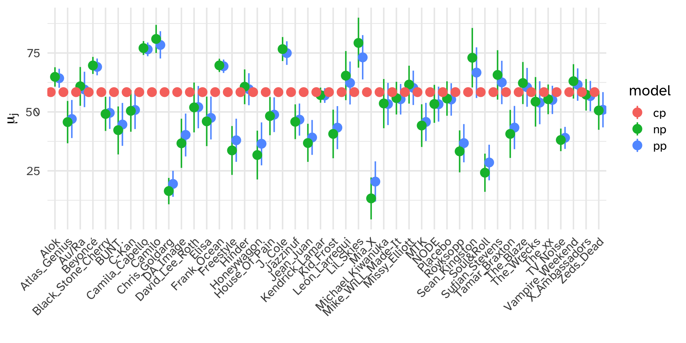

Hierarchical Models are Exciting!
Day 25
Carleton College
Stat 340 - Fall 2025
Plan for today:
- “big idea” of hierarchical models
- Motivating example: Cherry Blossom marathon times
- Hierarchical linear models with no predictors
- Motivating example: Spotify artists
How do net running times change with age?
Problem: multiple data points for each runner
“Complete pooling”
Put all observations across all groups into a single “pool” of data:
“Complete pooling”
\[Y_i | \beta_0, \beta_1, \sigma \sim N(\mu_i, \sigma^2) \text{ with } \mu_i = \beta_0 + \beta_1X_i\]
complete_pooled_model <- stan_glm(
net ~ age,
data = cherry_blossom_sample, family = gaussian,
prior_intercept = normal(0, 2.5, autoscale = TRUE),
prior = normal(0, 2.5, autoscale = TRUE),
prior_aux = exponential(1, autoscale = TRUE),
chains = 4, iter = 5000*2, refresh = 0, seed = 84735)
tidy(complete_pooled_model, conf.int = TRUE, conf.level = 0.80)# A tibble: 2 × 5
term estimate std.error conf.low conf.high
<chr> <dbl> <dbl> <dbl> <dbl>
1 (Intercept) 75.2 24.6 43.7 106.
2 age 0.268 0.446 -0.302 0.842“No pooling”
Treat each group as a separate dataset and build a model for each

“No pooling”
Let \(j\) denote each runner and \(i\) denote each race.
\[Y_{ij} | \beta_{0j}, \beta_{1j}, \sigma \sim N(\mu_{ij}, \sigma^2) \text{ with } \mu_{ij} = \beta_{0j} + \beta_{1j}X_{ij}\]
Based on this model, what do you anticipate that your running time will be at the age of 55?
Complete Pooling

No pooling

Complete Pooling
- Violates independence assumption
- Doesn’t capture variability within groups
- Might produce misleading conclusions about the relationship and the significance
No pooling
- Can’t reliably generalize to groups outside of our sample
- Assumes one group contains no relevant information about any other group
- Number of observations per group really matters
Partial Pooling
Though each group is unique, having been sampled from the same population, all groups are connected and thus might contain valuable information about one another

Based on this model, what do you anticipate that your running time will be at the age of 55?

Hierarchical normal model with no predictors
What is the average spotify song popularity?
If a new song is posted, what is our “best guess” for its popularity?
Data is grouped by artist

Complete pooling
Ignore artists and lump all songs together
No pooling
Separately analyze each artist and assume that one artist’s data doesn’t contain valuable information about another artist
Partial pooling (via Hierarchical structure)
Acknowledge the grouping structure, so that even though artists differ in popularity, they might share valuable information about each other and about the broader population of artists.
The hierarchy
Let \(i\) index song, \(j\) index artist
Layer 1: Model of how song popularity varies WITHIN artist \(j\)
\(Y_{ij} | \mu_j, \sigma_y \sim N(\mu_j, \sigma_y^2)\)
Layer 2: model of how the typical popularity varies BETWEEN artists \(j\)
\(\mu_j | \mu, \sigma_\mu \sim N(\mu, \sigma_\mu^2)\)
Layer 3: prior models for shared global parameters
\(\mu, \sigma_y, \sigma_\mu\)
Notation alert
There’s a difference between \(\mu_j\) and \(\mu\). When a parameter has a subscript \(j\), it refers to a feature of group \(j\). When a parameter doesn’t have a subscript \(j\), it’s the global counterpart, i.e., the same feature across all groups.
Subscripts signal the group or layer of interest. For example, \(\sigma_y\) refers to the standard deviation of \(Y\) values within each group, whereas \(\sigma_\mu\) refers to the standard deviation of means \(\mu_j\) from group to group.
The hierarchy (another way to think about it)
Let \(i\) index song, \(j\) index artist
Layer 1: Model of how song popularity varies WITHIN artist \(j\), as an offset from the pooled mean
\(Y_{ij} | \mu_j, \sigma_y \sim N(\mu_j, \sigma_y^2)\) with \(\mu_j = \mu + b_j\)
Layer 2: model of how the typical popularity varies BETWEEN artists \(j\)
\(b_j | \sigma_\mu \sim N(0, \sigma_\mu^2)\)
Layer 3: prior models for shared global parameters
\(\mu, \sigma_y, \sigma_\mu\)
Hierarchical model syntax in R/{rstanarm}/{lme4}
glmerinstead ofglm(comes from generalized linear mixed-effects model)- grouping structure goes within parentheses
Example: y ~ (1 | group)
Example: y ~ (1 + x| group)
{rstanarm} spotify model
spotify_hierarchical <- stan_glmer(
popularity ~ (1 | artist),
data = spotify, family = gaussian,
prior_intercept = normal(50, 2.5, autoscale = TRUE),
prior_aux = exponential(1, autoscale = TRUE),
prior_covariance = decov(reg = 1, conc = 1, shape = 1, scale = 1),
chains = 4, iter = 5000*2, seed = 84735, refresh=FALSE)- The prior for \(\sigma_\mu\) is specified by
prior_covariance. For this particular model, with only one set of artist-specific parameters \(\mu_j\), this is equivalent to an Exp(1) prior. (We will learn more aboutprior_covariancenext class).
pp_check

.
1 (Intercept)
2 b[(Intercept) artist:Mia_X]
3 b[(Intercept) artist:Chris_Goldarg]
4 b[(Intercept) artist:Camilo]
5 sigma
6 Sigma[artist:(Intercept),(Intercept)]“Fixed” effects
# A tibble: 1 × 5
term estimate std.error conf.low conf.high
<chr> <dbl> <dbl> <dbl> <dbl>
1 (Intercept) 52.4 2.48 49.2 55.6effects = fixed means with “non-varying” or “global.”
There’s an 80% chance that the average artist has a mean popularity rating between 49.2 and 55.6.
“Random” effects
To call up the posterior medians for \(\sigma_y\) and \(\sigma_\mu\), we can specify effects = "ran_pars", i.e., parameters related to randomness or variability:
Posterior analysis of group-specific parameters
\[\mu_j = \mu + b_j \]
Here, \(b_j\) describes the difference between artist \(j\)’s mean popularity and the global mean popularity.
# A tibble: 4 × 3
level conf.low conf.high
<chr> <dbl> <dbl>
1 Mia_X -40.8 -23.1
2 Chris_Goldarg -39.3 -26.7
3 Lil_Skies 11.1 30.4
4 Camilo 19.5 32.6Getting artist means
# A tibble: 4 × 7
# Groups: artist [4]
.chain .iteration .draw `(Intercept)` artist b mu_j
<int> <int> <int> <dbl> <chr> <dbl> <dbl>
1 1 1 1 50.1 artist:Alok 11.4 61.5
2 1 1 1 50.1 artist:Atlas_Genius -9.81 40.2
3 1 1 1 50.1 artist:Au/Ra 12.3 62.4
4 1 1 1 50.1 artist:Beyoncé 22.2 72.3Posterior summaries for \(\mu_j\)
# A tibble: 4 × 4
artist mu_j .lower .upper
<fct> <dbl> <dbl> <dbl>
1 artist:Alok 64.3 60.2 68.3
2 artist:Atlas_Genius 47.0 38.9 55.1
3 artist:Au/Ra 59.5 52.0 67.1
4 artist:Beyoncé 69.1 65.5 72.7Complete vs no vs partial pooling
Posterior prediction
If \(j\) is observed group
Reflects two sources of variability:
- within-group sampling variability in \(Y\)
- posterior variability in model parameters
\(Y_{new, j}^{(i)} | \mu_j, \sigma_y \sim N(\mu_j^{(i)}, (\sigma_y^{(i)})^2)\)
If \(j'\) is unobserved group
Must reflect three sources of variability:
- within-group sampling variability in \(Y\)
- posterior variability in model parameters
- Level 2: variability in \(\mu_j\) around \(\mu\)
\(\mu_{j'} | \mu, \sigma_\mu \sim N(\mu^{(i)}, (\sigma_{\mu}^{(i)})^2)\) \(Y_{new, j'} | \mu_{j'}, \sigma_y \sim N(\mu_{j'}^{(i)}, (\sigma_{y}^{(i)})^2)\)